Márcio Macedo
Hello there! I am Márcio C. F. Macedo, Technologist (2010-2012) in Analysis and Development of Systems from the Federal Institute of Bahia, Master (2013-2014) and Doctor (2015-2018) in Computer Science from the Federal University of Bahia.
My research interests include Augmented Reality, Parallel Processing, Volume Rendering, Image-Based Lighting and Global Illumination.
Email: marciocfmacedo@gmail.com
Disclaimer: The documents listed on this page are copyright-protected. By clicking on the links below, you confirm that you or your institution have the right to access the corresponding file. Note that the definite versions of all ACM SIGGRAPH papers can be downloaded at http://www.acm.org/dl/.
2018
| 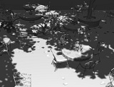 |
Efficient Shadow Anti-Aliasing Techniques using Silhouette Revectorization Márcio Macedo, Antônio ApolinárioSIBGRAPI - Conference on Graphics, Patterns and Images [paper] [poster] [doi] [code] Winner - Best Paper Award! |

|
Real-Time High-Quality Specular Highlight Removal using Efficient Pixel Clustering Antonio Souza, Márcio Macedo, Verônica Nascimento, Bruno OliveiraSIBGRAPI - Conference on Graphics, Patterns and Images [paper] [appendix] [slides] [doi] [code] |

|
Real-Time Shadow Detection using Multi-Channel Binarization and Noise Removal Márcio Macedo, Verônica Nascimento, Antonio SouzaJournal of Real-Time Image Processing [paper] [video] [doi] [code] |
| 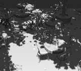 |
Improved Anti-aliasing for Euclidean Distance Transform Shadow Mapping Márcio Macedo, Antônio ApolinárioComputers & Graphics [paper] [video] [doi] [code] |
2017
|
Hard Shadow Anti-Aliasing for Spot Lights in a Game Engine Márcio Macedo, Almir Teixeira, Antônio Apolinário, Karl AgüeroSBGAMES - Brazilian Symposium on Computer Games and Digital Entertainment [paper] [slides] [video] [doi] [code] |
|
| 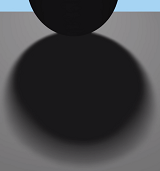 |
Euclidean Distance Transform Soft Shadow Mapping Márcio Macedo, Antônio ApolinárioSIBGRAPI - Conference on Graphics, Patterns and Images [paper] [slides] [video] [doi] [code] |
| 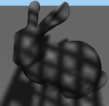 |
Euclidean Distance Transform Shadow Mapping Márcio Macedo, Antônio ApolinárioGI - Graphics Interface [paper] [appendix] [slides] [video] [doi] [code] |
| 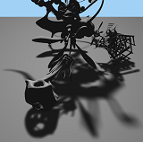 |
Revectorization-Based Accurate Soft Shadow using Adaptive Area Light Source Sampling Márcio Macedo, Antônio ApolinárioGI - Graphics Interface [paper] [slides] [video] [doi] [code] |
2016
| 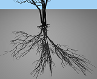 |
Revectorization-Based Shadow Mapping Márcio Macedo, Antônio ApolinárioGI - Graphics Interface [paper] [appendix] [slides] [video] [doi] [code] |
2015
| 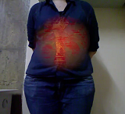 |
Focus plus Context Visualization based on Volume Clipping for Markerless On-Patient Medical Data Visualization Márcio Macedo, Antônio ApolinárioComputers & Graphics [paper] [video] [doi] [code] |
| 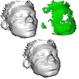 |
A GPU-Based Adaptive Algorithm for Non-Rigid Surface Registration Antonio Souza, Márcio Macedo, Antônio ApolinárioVR - Virtual Reality [paper] [doi] |
| 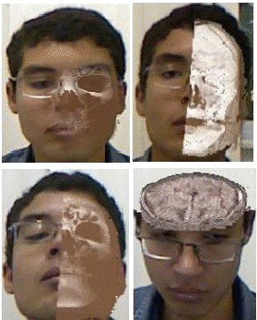 |
A Markerless Augmented Reality Environment for On-Patient Medical Data Visualization Márcio Macedo, Antônio ApolinárioSIBGRAPI - Conference on Graphics, Patterns and Images [paper] [poster] [code] |
2014
|
Improving On-Patient Medical Data Visualization in a Markerless Augmented Reality Environment by Volume Clipping Márcio Macedo, Antônio ApolinárioSIBGRAPI - Conference on Graphics, Patterns and Images [paper] [slides] [video] [doi] [code] |
|
| 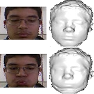 |
Multi-Frame Adaptive Non-Rigid Registration for Markerless Augmented Reality Antonio Souza, Márcio Macedo, Antônio ApolinárioVRCAI - International Conference on Virtual-Reality Continuum and its Applications in Industry [paper] [doi] |
| 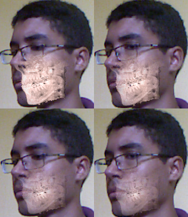 |
High-Quality On-Patient Medical Data Visualization in a Markerless Augmented Reality Environment Márcio Macedo, Antônio Apolinário, Antonio Souza, Gilson GiraldiJIS - SBC Journal on 3D Interactive Systems [paper] [video] [code] |
| 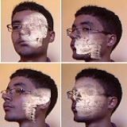 |
A Markerless Augmented Reality Environment for Medical Data Visualization Márcio Macedo, Caio Almeida, Antonio Souza, Josildo Silva, Antônio Apolinário, Gilson GiraldiWIM - Workshop de Informática Médica [paper] [slides] Winner - Best Paper Award! |
| 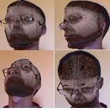 |
A Semi-Automatic Markerless Augmented Reality Approach for On-Patient Volumetric Medical Data Visualization Márcio Macedo, Antônio Apolinário, Antonio Souza, Gilson GiraldiSVR - Symposium on Virtual and Augmented Reality [paper] [slides] [video] [doi] [code] |
| 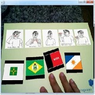 |
Um Jogo para aprender Libras e Português nas séries iniciais utilizando a tecnologia da Realidade Aumentada Luiz Santos, Theresinha Miranda, Maria Icó, Antonio Souza, Márcio Macedo, Paulo PoppeSBIE - Simpósio Brasileiro de Informática na Educação [paper] |
{kind=link}
2013
| 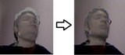 |
KinectFusion for Faces: Real-Time 3D Face Tracking and Modeling Using a Kinect Camera for a Markerless AR System Márcio Macedo, Antônio Apolinário, Antonio SouzaJIS - SBC Journal on 3D Interactive Systems [paper] [code] |

|
A Markerless Augmented Reality Approach Based On Real-Time 3D Reconstruction using Kinect Márcio Macedo, Antônio Apolinário, Antonio SouzaSIBGRAPI - Conference on Graphics, Patterns and Images [paper] [poster] |
|
A Robust Real-Time Face Tracking Using Head Pose Estimation for a Markerless AR System Márcio Macedo, Antônio Apolinário, Antonio SouzaSVR - Symposium on Virtual and Augmented Reality [paper] [slides] [doi] |
|
| 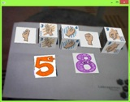 |
Aprendendo número em LIBRAS com a tecnologia da Realidade Aumentada Luiz Santos, Antonio Souza, Tonykley Santos, Theresinha Miranda, Márcio MacedoSBGames - Simpósio Brasileiro de Jogos e Entretenimento Digital [paper] |
| 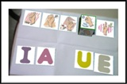 |
Desenvolvimento de um jogo da memória utilizando a realidade aumentada para o processo de ensinoaprendizagem de deficientes auditivos ou surdos Luiz Santos, Márcio Macedo, Tonykley Santos, Theresinha MirandaCONAHPA - Congresso Nacional de Ambientes Hipermídia para Aprendizagem [paper] |
| 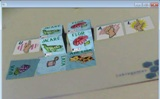 |
Jogando com a Realidade Aumentada e Aprendendo com LIBRAS Luiz Santos, Theresinha Miranda, Maria Santos, Tonykley Santos, Márcio MacedoTISE - Taller Internacional de Software Educativo [paper] |
|
Realidade Aumentada como ferramenta de apoio na alfabetização de pacientes com deficiência auditiva ou surdez Luiz Santos, Márcio Macedo, Tonykley Lobo, Theresinha MirandaHipermídia e Acessibilidade na Era da Inclusão [paper] |
|
Efficient Shadow Anti-Aliasing Techniques using Silhouette Revectorization Márcio MacedoAdvisor: Dr. Antônio Apolinário Doctor's Thesis - Computer Science - UFBA [Thesis] [SIBGRAPI Award] |
|
| 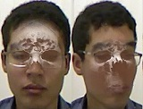 |
A Markerless Augmented Reality Environment for On-Patient Medical Data Visualization Márcio MacedoAdvisor: Dr. Antônio Apolinário Master's Dissertation - Computer Science - UFBA/UEFS [Dissertation] |
| 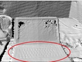 |
Reconstrução de Modelos 3-D em Tempo Real Utilizando Kinect e GPU Márcio MacedoOrientador: Dr. Antonio Souza Trabalho de Conclusão de Curso - Análise e Desenvolvimento de Sistemas - IFBA [Monografia] |
Same-page cross-link controls:
Page 1 | Page 2
| Page 3 | Page 4
| Page 5